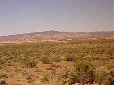

The Steppe iIs The Most Beautiful Thing In Mother Nature

FLORA
La flora esteparia se ha adaptado a la escasa humedad del suelo, tendiendo a ser
de tipo gramínea (hierbas, arbustos cuando mucho) o de matorral, es decir, de poco tamaño, poco
follaje y poco verdor. Sus raíces profundas les permiten buscar mejores capas del suelo, y
es común hallar especies rizomáticas y capaces de almacenar agua en sus tejidos, tal y como
en los desiertos cálidos. Algunas especies vegetales frecuentes en la estepa son el cardón, el ruibarbo, los
álamos, los cactos, los cistus y diversos tipos de hierbas, algunas capaces de resistir
incluso temperaturas de -20 °C
FAUNA
En este ecosistema, se desarrollan especies variadas adaptadas para sobrevivir al clima.
Bisonte americano
El bisonte americano (Bison bison), también llamado búfalo, es un bóvido que se distribuye en las estepas de América del Norte.
2. Marmota bobak
Entre la fauna de la estepa, otro de los 10 animales es la marmota bobak (Marmota bobak). Esta especie se distribuye en Rusia, Kazajistán y Ucrania, donde habita en diferentes áreas de la estepa. Vive en grupos e hiberna durante 6 meses todos los años.
3. Saiga
La saiga (Saiga tatarica) es una variedad de antílope que se distribuye en parte de Rusia, China, Mongolia, Ucrania, Kazajistán y Uzbekistán. Habita a 1.600 metros de altura en zonas desérticas y estepas.
4. Caballo de Przewalski
El caballo de Przewalski (Equus ferus ssp. przewalskii) es parte de la fauna de la estepa que se distribuye en Mongolia, Rusia, Ucrania y China.
UBICACION GEOGRAFICA
UBICACION: Se localiza a los 45° latitud Norte y Sur. Las regiones fundamentales en las que se desarrolla la estepa son: el Asia central, el centro de América del Norte y el centro oeste de Australia y el sotavento de Nueva Zelanda, el entorno del Río de la Plata y la Patagonia, y algunas zonas de África.
El clima del área está caracterizado como árido, aunque atemperado por su proximidad al mar y por encontrarse a sotavento del último escalón de la meseta patagónica...
TIPOS DE SUELO
La estepa es un bioma que consiste en un territorio de vegetación herbácea, propio de climas extremos y escasas precipitaciones.
También se le asocia a un semidesierto frío, para establecer una diferencia con las sabanas de climas cálidos.Estas regiones se encuentran lejos del mar con clima árido continental, una gran variación térmica entre verano e invierno y precipitaciones que no llegan a los 250 mm anuales.Predominan las hierbas bajas y matorrales.
El suelo contiene muchos minerales y poca materia orgánica; también hay zonas de la estepa con un alto contenido en óxido de hierro, lo que otorga una tonalidad rojiza a la tierra.
MAPA DE LOS PAISES
Alrededor del mundo podemos encontrar variaciones del ecosistema y uno de ellos es la Estepa
en la imagen anterior podemos observar que hay dos tipos de Estepas la calida y fria y a continuacion veremos su ubicacion y en donde se encuentran mas exactamente
El Desierto de Chihuahua de México y Estados Unidos.
El desierto de Chihuahua .Se encuentra a ambos lados de la frontera de los Estados Unidos y México: en Estados Unidos ocupa los valles y cuencas del centro del estado de Nuevo México, así como la región al oeste del río Pecos, en el estado de Texas y el sureste de Arizona; en México es parte de las Sierras y Llanuras del Norte, cubriendo gran parte de los estados de Sonora, Chihuahua, Coahuila y Zacatecas. De los cuatro grandes desiertos norteamericanos, el desierto de Chihuahua es el que se encuentra más al este y al sur en el continente. Recibe su nombre por ser en el estado de Chihuahua donde se iniciaron los estudios de este ecosistema....
INFORMACION DEL CLIMA
El clima estepario, de estepa o clima semiárido frío es un clima semiárido característico de los ecosistemas de estepa templada o fría. De acuerdo con la clasificación climática de Köppen se denomina BSk y agrupa a los climas semiáridos templados y fríos que tengan una temperatura media anual inferior a 18°C. Las precipitaciones pueden estar entre 200 y 500 mm aproximadamente....
GRAFICA DEL CLIMA
Los diagramas climáticos de meteoblue se basan en 30 años de simulaciones de modelos meteorológicos por hora y están disponibles para cualquier lugar de la Tierra. Le dan una buena indicación de los patrones climáticos típicos y condiciones previstas (temperatura, precipitación, radiación solar y viento). Los datos meteorológicos simulados tienen una resolución espacial de unos 30 km y pueden no reproducir todos los efectos del clima local, como las tormentas, vientos locales o tornados.
Usted puede explorar el clima para cualquier lugar como la selva amazónica, sabana de África Occidental, el Desierto del Sahara, la tundra de Siberia o el Himalaya....